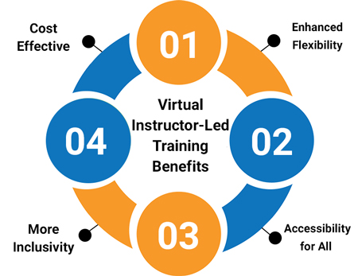

Virtual Instructor-Led Training (VILT)
Before getting into the details of Virtual Instructor-Led Training, it may be best to explain what Virtual Instructor-Led Training means.
Simply, it is a training method in which a virtual environment is used by a trainer/coach to show, explain and help others learn.
Virtual Training, or also known as Virtual Instructor-Led Training (VILT) takes the fundamentals of face-to-face (F2F) classroom training and repeats the experience through a virtual platform such as Microsoft Teams or Zoom.
Good virtual workshops are super-interactive and engaging. There are multiple opportunities for participants to join in with discussions, share their experiences, practice skills and conversations and ask questions.
Most commonly, virtual workshops are bite-size, running from 60 to 180 minutes and are sometimes combined with other methods of training, F2F or other online elements, such as e-learning or webinars, to create a blended learning programme.
So, what exactly is Virtual Training (VILT)?
Virtual Training, or VILT (Virtual Instructor-Led Training) takes the fundamentals of face-to-face (F2F) training and replicates the experience online and live.- The instructor and participants log into a chosen Virtual Training (VILT) platform (such as Microsoft Teams or Zoom) from different locations.
- The workshop is run live with all learners participating at the same time.
- Virtual workshops are interactive. Everyone joins in on discussions, shares experience, practises conversations and asks questions. They may choose to use a webcam. Quality VILT workshops should be a conversation and not a presentation.
- Virtual workshops are usually bite-size, 60-180 minutes.
- Groups of up to12 participants are typical for a VILT workshop.
- VILT can be combined with F2F training and other approaches, like e-learning or webinars, to create a blended learning programme.
Is Virtual Instructor-Led Training Right for You? Read more on VILT here.
Virtual learning: the future of classroom training
Transitioning to an online space has been shown to give workplace learning the next step forwards and achieves greater accessibility. Certainly, in recent months, this has been proven to be the case many times over, with the world shifting to a more virtual setting.
But what is virtual learning and why is it so popular?
Simply put, Virtual Training is a shared learning experience that is produced through computers and the internet. Training occurs exactly the same as it would in a co-located, physical environment only, the coach and learners are separated from each other.
It is increasingly popular due to its ease of accessibility, its cost-effective nature and the flexibility it affords its learners and adopting organization.
The approach offers a wide range of benefits, that physical classroom training cannot match, such as:-
Enhanced flexibility.
The ability to join training sessions easily and quickly with no commute and no need to attend a physical venue is a great advantage. Running Virtual learning workshops allows learners to return to their daily duties with minimal disruption to their working day is another upside.Accessibility for all.
Training in virtual classrooms allows much greater accessibility for all employees, due to having no physical, centralised location where the training takes place. Anyone with access to a computer and internet connection, can take part in virtual workshops, no matter where they are located.More Inclusivity.
People learn in different ways. The virtual classroom fosters an enhanced capability to facilitate and meet the needs of many, by offering a myriad of ways in which to learn. Vocally, visually, by using colours or video in presentations, the only limit is time and the facilitator’s imagination. Also, those colleagues sited in remote locations get equal access to their development as do those at HQ.Cost Effective.
Once you remove the travel, venue costs, accommodation, and the productivity loss caused by time away from work, training can become much more budget-friendly when undertaken virtually. It renders many of the additional costs associated with providing organisational training obsolete. There is no need for trains, planes and automobiles when the training can take place at your own desk, nor lunches, coffees and we could go on….
Want to hear more about the future of Virtual Training. Watch this short video “Let's Talk About Taking Training Virtual” for more insights.Catherine and Max Cohen from Hubspot talk about taking training virtual.
Virtual Instructor-Led Training versus Instructor-Led Training
Virtual Instructor-Led Training (VILT) and Instructor-Led Training (ILT) have some things in common. They are both training techniques used to achieve learning transfer with a cohort of participants.
Where they differ is in their delivery mode. VILT takes place ‘live’ entirely online, using a platform, such as Microsoft Teams or Zoom, and allows participants to take part regardless of location, in an office, remotely or nowadays when working from home.
ILT is traditionally conducted in a physical classroom, meeting room or conference space, often with participants who have travelled to a central location in order to attend.
At VTT, we say that VILT offers a major uplift in benefits compared to ILT, such as being more cost effective, more accessible and genuinely inclusive for a wider selection of participants.
Celebrate and Take Advantage of Virtual Instructor-Led Training
Use the following 5 tips to enhance the outcomes of your VILT learning sessions:-
- Have participants turn on their webcams. Creating visual contact is important, allowing facilitators to better connect with their learners.
- Build rapport and trust through real conversation and information sharing. Getting to know participants is key for facilitators especially in a VILT setting. In order to develop this relationship, facilitators need to allow more time for introductions at the beginning of a workshop. Also, being friendly, personable and authentic really adds to outcomes for participants.
- Get expert on the technology before running virtual deliveries on it. Trainers who are fully versed in their platforms are better equipped to deal with occasional technical hiccups and can prevent them from occurring altogether in some cases.
- Encourage the minimisation of distractions. Urge participants to focus their concentration by choosing a dedicated space in which to log in, put other devices on silent and use techniques that create engagement and immersion in the learning from the get-go.
- Be engaging and interactive to uplift participant focus. Designing interesting and involving content will go a long way to keeping participants on task and enhancing the learning transfer.
VILT is a fantastic tool and will become the replacement for ILT. Celebrate the functionality and opportunity available through the platforms, to make your Virtual Training a success.
What are some tips for Virtual Instructor-Led Training?
Turn webcams on
One device per person
Breaks in long sessions
Audio is key
Foster inclusivity
Keep an eye on the time
Polling and Voting
Practice!
Ask for Feedback
Make eye contact
What do your participants see?
Keep a learner log
Bring your personality
It is key to have your camera on as the trainer, but it is also important to give your participants the opportunity to see and interact with each other as well. Body language and facial expressions are an essential part of communication and when available through the virtual medium enhance the experience for all attending.
Check out our blog on how to rock using your camera?
Virtual Training works much better when it is attended by one participant per one device. When each participant joins via their own device the experience is enhanced as is learning transfer and engagement.
For longer sessions, it is worth scheduling in timely breaks, allowing participants to grab a drink or just stretch their legs for a moment. They then return refreshed and ready to continue.
Audio is integral to the success of a virtual workshop, as it is a main tool of communication. Encourage participants to manage their mute, if for example they are dealing with excessive background noise, or feedback.
Make sure that whole group discussions are a part of your engagement during the workshop, some of the best conversations happen when a wider array of people are involved. Keep a log of participants' contributions and encourage equal and regular inputs.
We have noticed that everything seems to take longer in the virtual setting. Consider factoring in extra time for breakout groups, tasks or small group conversations.
Want some extra time tips? Watch our short video - Learn 3 Different Time Tips to Make Your Virtual Workshop Brilliant - for some helpful tips for managing time during a virtual workshop.
Catherine gives you some super Timing Tips to make your virtual workshops brilliant
Give your participants the opportunity to contribute to discussions or display their understanding with the poll function.
This one always goes without saying, but practice is key. The more you practice, the smoother your delivery experience will be.
It is important to ask for feedback on your sessions, especially when first starting out, which can help you to identify the areas of your workshop that are working well and those needing improvement.
Look directly into your camera. This gives your participants the feeling of true eye contact with you and can help to increase connectivity and communication. It’s weird at first, especially if your camera is off to one side of your screen- but you’ll get used to it!
When starting out, it can be worthwhile to test your set-up and practice your delivery with a second device prior to your actual live learning session. This allows you to see what your participants see, as their screen and set up can be different to your own. In order to facilitate a smooth experience, it can be helpful to know how their screen may be displayed.
For many virtual trainers, a learner log is a golden tool. It helps you to remember key pieces of information about participants, from how engaged they have been, to details about them that will help you to encourage their learning on an ongoing basis.
Investigate how to use a learner log in this short video – it will change the way you interact with participants forever.
Catherine teaches you how to use a learner log.
Remember, bring your own personal flair to your delivery and to have fun. If you are enjoying yourself, your participants will too.
Check our case study on how we helped a huge biotech company with their Virtual Training
They had already planned to shift 50% of their training delivery to virtual pre-COVID. However, with the appearance of the global pandemic, this goal was accelerated to be 100% virtual by the end of March 2020. So, they contacted the Virtual Training Team, who developed a bespoke Train The Virtual Trainer Programme to suit their needs, helping them build confidence & competence.
What Are The Best Platforms For Virtual Instructor-Led Training?
Choosing the right VILT platform software for your organisation is vitally important. It is key to the success of any Virtual Training programme and your learners' experience, so investing the right time and effort to ensure your chosen platform suits your organizational requirements is a must.
The following are examples of the more widely used and available platforms we have experience of.
Zoom
Zoom is an online audio and web conferencing platform. It can be used to make phone calls, or to participate in video conference meetings.
While there is a basic option that is free, in order to run Virtual Training workshops via the platform, there are a couple of upgrade options, such as Zoom Pro, Zoom Business or Zoom Enterprise. Each of these adds a substantial set of additional features to the solid basic plan, such as the ability to have a conference of more than 100 people at a time, or most importantly, extend a learning session beyond a standard 40 minutes.
It offers a host of tools on the platform like screen sharing, the ability to record, on screen annotations, breakout groups, chat, emojis and most recently in their 5.2 update, the ability to present from your slides like a weather reporter.
It has grown in popularity rapidly in recent months and is a serious contender for Virtual Training due to its wide range of capabilities but also down to it being a reliable, high quality conference tool that is easy to use.
Check out our video on Zoom 5.2 August Update, and let Catherine show you all the cool things you can now achieve.
New Zoom 5.2 August Update! New Features to Liven Up Your Meetings
Microsoft Teams
Microsoft Teams is a communication and collaboration platform that many trainers find easy to use for training purposes. It is also used for video and audio meetings, file and app sharing.
There is a free version, but also two upgrade options with more security and administration facilities which benefit businesses, Office 365 Business Essentials or Office 365 Business Premium.
It offers a wide range of tools such as integrated apps such as Forms or Excel, powerful video conferencing and extensive chat options including GIFs and emojis, and the ability to create side meetings to function as breakout rooms.
It is a regularly updated virtual platform which enables colleagues to communicate effectively from any location.
Cisco WebEx Training Centre
Cisco WebEx Training Centre is an online platform that allows you to deliver live instruction to anyone, anywhere and is widely used by many Virtual Training companies.
It offers high definition video, breakout groups, polling, whiteboards and chat functions as well as the standard video and audio functions.
It is a paid for platform, offering a host of benefits for users, but compared to other, less expensive options can be a little clunky and less user friendly.
Adobe Connect
Adobe Connect can provide a virtual classroom for your Virtual Training. It is accessible from anywhere with an internet connection and works across a range of devices. It is a versatile platform, and while the more expensive of the platform options, offers a large amount for that investment.
Unlimited and customizable meeting rooms, breakout session, standard audio and video conferencing ability, recording capabilities, enhanced whiteboards, chat and polling are amongst the many functions that Adobe Connect can offer.
Once the best platform for your organization has been decided, now it is time to design your training to best fit the platform of choice. A platform could have endless numbers functions , but without a skilled facilitator and a workshop tailored to fit it, they would have little use.
What Are The Benefits Of Virtual Instructor-Led Training?
- Entirely remotely accessible for all and can be offered worldwide. In fact, with some careful planning, most time zones can also be catered for.
- Improved capacity for individualization, training delivery can be organised to different levels, competence, needs and even different learning styles
- Offers a safe and secure learning environment
- Much better flexibility offered in terms of time, location and learner pace
- It’s effective! Cost-effective, time-effective, scalable and creates effective learning transfer!
So that’s the short overview of what makes Virtual Training beneficial to you, but what about some tangible Virtual Training benefits to taking whole training programmes and moving them online?
Flexibility
Accessibility
Application
Virtual Training can be accessed from anywhere where there is internet. This removes the need to coordinate time and travel for multiple participants at once, thus lowering cost, time and the resources needed to ensure a good experience for learners.
Most Virtual Training Programmes disperse their learning material into bite-size chunks. The lack of travel and preparation time results in an ability to train more regularly yet for shorter periods of time. This creates a more effective learning environment because it allows more time in between workshops to digest information, models and approaches learned.
There has never been a more inclusive, accessible way to provide training in an organisation! Wherever your employees are based, remote, homeworker, hot-desking office attendee, nomad worker caravanning in Cairo, Virtual Training offers them all the equal opportunity to attend virtual workshops, learn new skills and up their game.
We find this leads to a much more diverse virtual classroom. Participants who may have struggled to attend a traditional co-located workshop are now easily able to attend live workshops which include, interactive collaboration and discussions with other colleagues. This creates rich, varied conversation which invariably is massively effective, creating insight and deeper understanding of key issues.
Virtual Training is easily integrated into the working day and does not require any travel. This means that participants can apply the skills learned during a virtual workshop immediately into their working environment.
Virtual programs are often delivered through numerous bite-sized workshops which allows participants to practise a succinct number of the tools and techniques as they progress.
This way of learning improves retention and provides an on-the-job application that improves outcomes for learners.
Need more benefits to convince your L&D Team? Check out our video - How to Convince Your L&D Team of Virtual Training.
What Are The Top Tips For Designing Effective Virtual Instructor-Led Training?
We know that simply lifting a slide-deck from a face-to-face (F2F) workshop and presenting it in a virtual one just doesn’t deliver the best results.
So, where do you start when building a workshop specifically for virtual delivery?
Well, virtual workshops are bitesize in nature, so choosing the correct content to make time work best for you is critical.
Here are our steps for designing Virtual Instructor-Led Training.
1.Start with the end goal in mind
- What do you want participants to think, feel, do or know as a result of this workshop? It’s an important question.
- A common mistake that designers can make is opening up PowerPoint and thinking, “Right. Slide 1…”
- How can you know what to include if you haven’t carefully considered the desired outcome of the workshop as a whole?
- Starting with the result you are looking to achieve and then working back from there makes it much easier to edit and decide on content and process, so then everything is focused on achieving that result.
Brainstorm Content Early
- What are your key messages that you want participants to take away from your session? What key skills, models or processes might you include?
- If you are converting something that already exists F2F into a virtual workshop, then you will have some content to begin with.
- Take the time to really consider what could be included over what already exists. Making the most of this step gives you the opportunity to refresh content too and make it successfully work for the virtual environment.
- Even if you are designing from scratch, this step is still important. Get creative and think about what you know that could be useful to help achieve the result you’re aiming for. Don’t worry though, you won’t include it all, it just helps to create a smorgasbord of different ideas to choose from.
Want more Virtual Design tips. Click here to watch our video for Virtual Instructor-Led Training best practices – VTT’s 6 Principles for Virtual Design.
Decide on your content
- In this step, you’ve got to be ruthless. Decide on what must stay in and what can and needs to be dropped.
- Come back to the purpose of your virtual workshop. If there is content or processes that don’t move your learners towards that outcome, then don’t use it.
- Everything takes a little bit longer in the virtual environment compared to F2F, so be sure to consider how much time you have got.
- Virtual workshops are often best delivered in bite-sized format - somewhere between 90 mins and 2 hours. It is often worth considering delivering two separate workshops that give you time to explore what you need to, without being rushed, rather than having everything crammed into a single one.
Work out your processes
- How will each section of content be achieved? What processes, materials and activities will deliver this gig (we call each section of a training workshop a ‘gig’) in the most efficient way? Here is where you can work out your timings.
- Ideally, you want variety in your approaches, but still with purpose. Consider best practice for each model and how it feeds back into your purpose.
Check our case study on how we helped to design a virtual global vision and values programme.
An engineering consultancy wanted to deliver results through their people on a global scale with training available to all. VTT designed interactive virtual workshops focused on vision and values for managers and also provided supporting materials.
Bring your content to life
- Here you can ask yourself what stories, examples, imagery, or science will add appropriate flair to each section?
- This is about the extra flair that makes your content interesting, memorable, and fun. You may decide to start investigating stock photos to use or research some case studies/examples that bring your content to life and land your point.
- Remember, flair and fun can still be achieved alongside your purpose.
Link it all together
- Think about sequencing. It’s time to double check your timings and order. Decide what needs to be said to link each section to the next and fuel the overall purpose of your virtual workshop.
- Examine the whole flow of your workshop. How does it feel?
- It can also be helpful to consider alternative options for different groups or if there are timing issues here. Where can cuts be made? Where is your flex?
Create the introduction
- One of the last things to do is to consider how you will kick off your virtual workshop. You want to get people invested and engaged quickly.
- What will go on your welcome slide? How will you grab the attention of the participants as they enter the session, to get them thinking and interacting with the tech immediately?
- Your welcome slide is the opportunity to begin creating context for the participants and getting them into the zone of the topic at hand. Putting the thought in and really considering how to get things started, can ensure your virtual workshop gets off on the right foot.
Create the slides and materials
- Finally, you can go to PowerPoint. It’s time to pull everything together into a seamless, flowing, simple to follow, slide-deck with extra materials.
- You shouldn’t be going to PowerPoint any earlier than this!
Conclusion
Virtual Instructor-Led Training is an incredibly versatile and increasingly popular tool for Learning and Development teams around the globe.

If you would like help with your Virtual Training, Train the Trainer programmes or Virtual Design, please don’t hesitate to get in contact with us.
As a dedicated Virtual Training company, we would be happy to talk through your Virtual Training requirements and help you to get on your way to virtual success.
Featured Resources
-

Virtual Training - A Complete Guide to Everything You Need to Know
Virtual Training is a method in which a virtual environment is used by a trainer/coach to show, explain and teach certain skills in order to help others learn.
Read more... -

The Secrets To Conducting Great Virtual Meetings
Virtual Meeting: Learn what is virtual meeting, why all business is using this, what are the best platforms to run it successfully and complete benefits.
Read more... -
How to Set Up a Successful Virtual Conference?
Learn what is virtual conference, how do virtual conferences work, what platforms facilitate it, pros and cons, what do I need to run a virtual conference and what type of business do virtual conferences suit.
Read more...